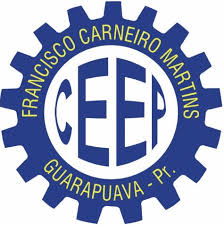
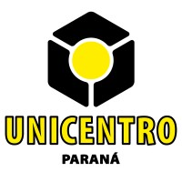
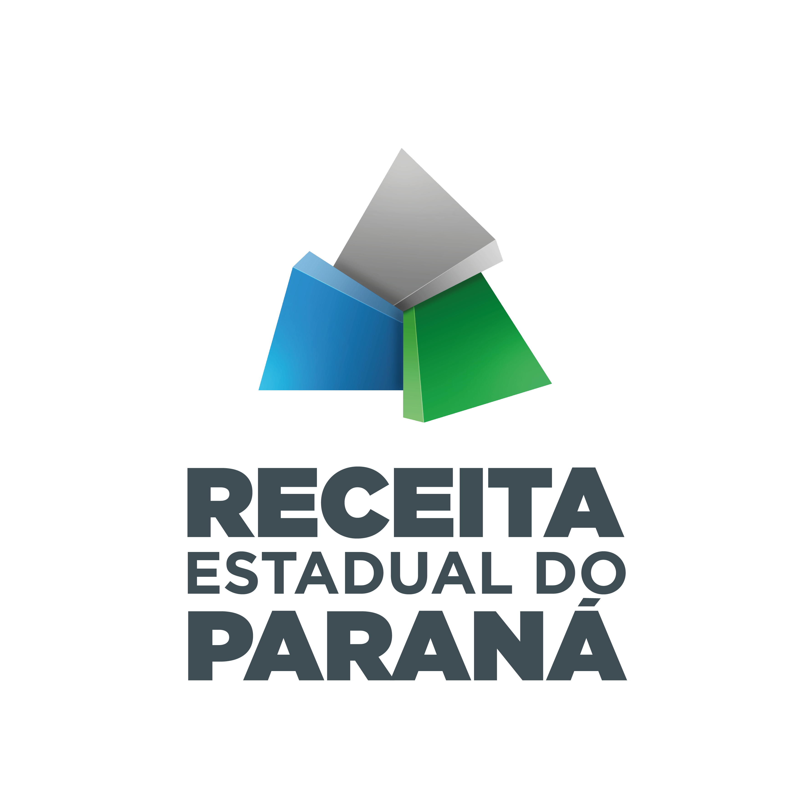
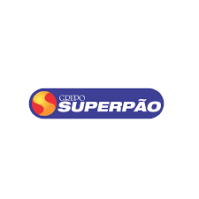
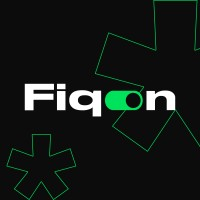

Desenvolvedor Back-End!
Olá! Eu sou o Matheus! Sou desenvolvedor back-end.
Apaixonado por tecnologia desde a infância, aspirante a programador!


Principais Tecnologias


Sobre
Olá! Eu me chamo Matheus Hudziak e tenho 23 anos. Sou graduado em Análise e Desenvolvimento de Sistemas e atualmente trabalho como Residente Técnico na Receita Estadual. Em 2019, concluí meu curso técnico em informática e, em 2023, finalizei minha graduação como Tecnólogo. Atualmente, estou cursando pós-graduação em Inovação na Unicentro e em Engenharia de Software na Estude Sem Fronteiras.
Possuo uma sólida experiência em hardware, mas decidi mudar minha trajetória e investir na área de sistemas. Com mais de três anos de experiência na área de sistemas, estou agora buscando minha primeira oportunidade como desenvolvedor.
Formação
-

Colégio Estadual Francisco Carneiro Martins
Curso Técnico Integrado Informática
2016 - 2019
-
UniGuairacá Centro Universitário
Análise e Desenvolvimento de Sistemas
2021 - 2023
-

Universidade Estadual do Centro-Oeste
Especialização em Inovação, Transformação Digital e E-Gov
2024 - 2025
-
Estude Sem Fronteiras
Especialização em Engenharia de Software
2024 - 2024
Experiência
-

Residente Técnico
5ª Delegacia Regional da Receita · Meio período
jan de 2024 - o momento · 6 meses
Guarapuava, Paraná, Brasil · Presencial
-

Auxiliar de Informática
Grupo Superpão · Tempo integral
jul de 2023 - dez de 2023 · 6 meses
Guarapuava, Paraná, Brasil · Presencial
Suporte técnico ao usuário, manutenção de hardware, instalação e configuração de softwares, instalação e configuração de impressoras. Controle de chamados via GLPI. Emissão de notas via ERP Flex.
-

Integrador de Sistemas
FiqOn · Tempo integral
jan de 2023 - jun de 2023 · 6 meses
Guarapuava, Paraná, Brasil · Presencial
Reuniões semanais com o cliente para levantamento de requisitos. Integração de dois ou mais sistemas utilizados pelo cliente. Programação em plataforma SaaS, no-code e low-code. Manipulação de banco de dados via SQL. Programação com JavaScript. Consumo de API e Webservices.
-
Analista de Sistemas
UniGuairacá Centro Universitário · Estágio
mar de 2022 - jan de 2023 · 11 meses
Guarapuava, Paraná, Brasil · Presencial
Suporte técnico ao usuário e administração das plataformas Moodle e Sagah. Administração de Sistema ERP.
-
Auxiliar de Informática
UniGuairacá Centro Universitário · Estágio
jul de 2021 - mar de 2022 · 9 meses
Guarapuava, Paraná, Brasil · Presencial
Suporte técnico ao usuário e manutenção de hardware.
-
Técnico de Informática
UniGuairacá Centro Universitário · Estágio
fev de 2018 - dez de 2019 · 1 ano 11 meses
Guarapuava, Paraná, Brasil · Presencial
Suporte técnico para professores e alunos da instituição.
Projetos
-

Projeto
Em breve...
-

Projeto
Em breve...
-

Projeto
Em breve...